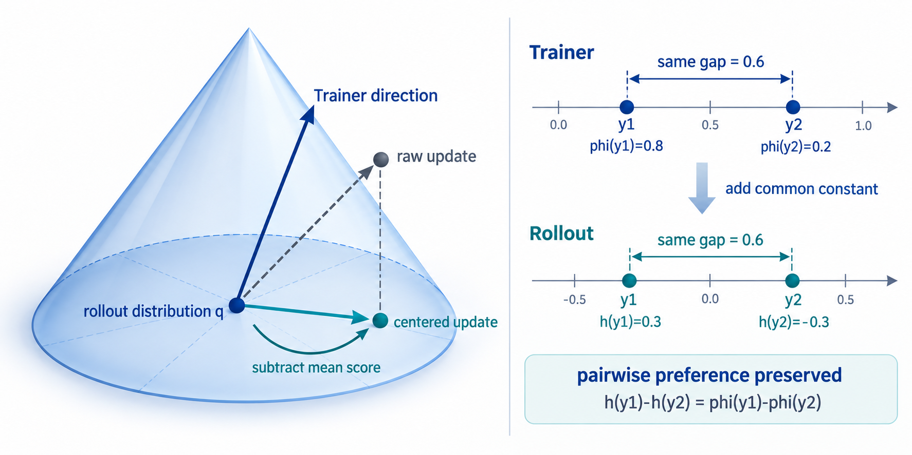

Score Centering: A Constrained Optimization Perspective
Author: Ziniu Li
Date: September 25, 2026
1. Motivation: What should be transported under off-policy training?
Fix a prompt. Let \(p_θ(y)\) denote the trainer's distribution over responses \(y\), and let \(q(y)\) denote the distribution that actually produces rollouts. In the simplest case, \(q\) comes from a stale trainer checkpoint; more generally, it may differ because of quantization, the inference engine, the sampling kernel, or numerical precision. The distribution used to compute training gradients and the distribution used to generate data are therefore not exactly the same.
Such off-policy mismatch can make training unstable. For some token or action, the rollout distribution and the trainer distribution may assign very different probabilities: an action that one considers highly likely may be assigned very low probability by the other. In this regime, the resulting optimization problem can be poorly conditioned and the learning signal can have high variance, making direct optimization difficult.
Once these distributions differ, one natural response is to formulate a new global objective directly for the rollout policy. However, that addresses a different problem: it asks us to optimize the sampler itself. The narrower formulation above is especially useful when the sampler exposes samples and log-probabilities but not parameter gradients.
For comparison, a tempting alternative is to optimize the sampler directly. Let \(R(y)\) denote the scalar reward of response \(y\). This global-objective route treats the sampler itself as the policy to optimize:
\[ \max_{ϕ}\ \mathbb{E}_{q_ϕ}[R(y)]. \]
If \(q_ϕ\) is differentiable and the sampler score \(s_q(y)=∇_ϕ\log q_ϕ(y)\) is available, we can indeed write the usual policy gradient:
\[ ∇_ϕ\mathbb{E}_{q_ϕ}[R] =\mathbb{E}_{q}\left[R(y)s_q(y)\right]. \]
In a practical decoupled training-and-inference system, however, the sampler may be a black-box inference engine, or its parameter update path may simply not be exposed. The expression above is then unavailable. What we need is a response-space construction that depends only on the rollout distribution \(q\) and the trainer score; reward weighting can be added separately when estimating a particular objective.
Suppose we choose a direction \(u\) in the trainer's parameter space. As the trainer moves along this direction, the first-order change in the log-probability of response \(y\) is
\[ φ_u(y) =\left.\frac{d}{dε}\log p_{θ+εu}(y)\right|_{ε=0} =u^\mathsf{T}s_p(y), \qquad s_p(y)=∇_θ\log p_θ(y). \]
This quantity describes how the trainer changes the relative preference for each response when updated along \(u\). For example, if \(u=(1,0)\) and a response has score \(s_p(y)=(1,1)\), its first-order log-probability change is \(1\); if \(u=(1,1)\), the change is \(2\). Thus, \(φ_u(y)\) describes the local effect of the trainer update on each response.
However, a probability model primarily specifies relative preferences among responses, not an absolute change for each response. The construction below answers the central question by imposing two constraints: preserve the trainer's relative preferences, and keep the rollout distribution normalized.
2. First constraint: Preserve relative preferences
What a probability model truly determines is the relative probability among responses. For two responses \(y\) and \(y'\), the change in log-odds induced by the trainer update is
\[ \left.\frac{d}{dε} \log\frac{p_{θ+εu}(y)}{p_{θ+εu}(y')} \right|_{ε=0} =φ_u(y)-φ_u(y'). \]
Therefore, if \(h_u(y)\) denotes the local log-probability change of the rollout distribution in this direction, preserving the trainer's pairwise preference requires
\[ h_u(y)-h_u(y')=φ_u(y)-φ_u(y'). \]
This constraint may seem redundant on-policy: if \(q=p_θ\), the trainer and the rollout use the same distribution, and the trainer score already satisfies \(\mathbb{E}_{p_θ}[s_p]=0\). Under an off-policy mismatch, however, \(q\neq p_θ\), and the same trainer local change \(\phi_u\), when interpreted under \(q\), generally has \(\mathbb{E}_{q}[\phi_u]\neq 0\). In other words, we cannot use the trainer's absolute log-probability change unchanged as a valid update to the rollout distribution.
What can genuinely be transported across distributions is the relative change between responses. The equation above keeps the log-odds change between every pair of responses unchanged, so stale samplers, quantization, and other sources of mismatch do not alter the preference expressed by the trainer. It permits adding the same constant to every response; the probability-normalization constraint below will determine exactly that remaining degree of freedom.
All solutions to this equation have only one degree of freedom: there is a response-independent constant \(c_u\) such that
\[ h_u(y)=φ_u(y)+c_u. \]
In other words, relative preferences determine the shape of the local change, but not its absolute level.
3. Second constraint: Preserve probability normalization
Write the rollout distribution as a local perturbation \(q_{ε,u}\), with \(q_{0,u}=q\), and define the local log-probability change by
\[ h_u(y):=\left.\frac{d}{dε}\log q_{ε,u}(y)\right|_{ε=0}. \]
For discrete responses, \(q_{ε,u}\) remains a probability distribution for every \(\epsilon\), so
\[ 1=\sum_y q_{ε,u}(y). \]
Differentiating at \(ε=0\) gives
\[ 0=\sum_y q(y)h_u(y)=\mathbb{E}_{q}[h_u]. \]
This is the normalization constraint beyond relative preference: a local update can only redistribute probability mass among responses; it cannot create or destroy total mass.
Substituting \(h_u(y)=φ_u(y)+c_u\) from the previous section uniquely determines the constant:
\[ c_u=-\mathbb{E}_{q}[φ_u]. \]
Therefore,
\[ h_u(y)=φ_u(y)-\mathbb{E}_{q}[φ_u] =u^\mathsf{T}\bigl(s_p(y)-μ_q\bigr), \qquad μ_q:=\mathbb{E}_{q}[s_p]. \]
This is score centering:
\[ \widetilde{s}_q(y)=s_p(y)-\mathbb{E}_{q}[s_p]. \]
It is not an arbitrary baseline added by hand; it is the unique result of combining the constraints of preserving relative preferences and preserving probability normalization.
These three descriptions fit into a single intuition. Imagine all valid probability distributions as a simplex. The rollout distribution \(q\) is one point on it, and \(h_u(y)\) gives the instantaneous velocity from that point in the direction of response \(y\). The first statement says which local direction the trainer parameter direction \(u\) corresponds to on this simplex; it translates an update in parameter space into a change in response space.
The second statement is the geometric constraint that this velocity must satisfy. If the probability of some responses increases, the probability of others must decrease; \(\mathbb{E}_{q}[h_u]=0\) says exactly that no probability mass is created or destroyed. The mean is weighted by the current rollout distribution \(q\), because \(q(y)h_u(y)\) is the contribution of response \(y\) to the actual probability change.
The third statement says that this translation does not alter the information genuinely provided by the trainer. For any two responses, \(h_u(y)-h_u(y')\) determines the change in their log-odds, and this difference is exactly the trainer's. Score centering changes only the common offset shared by all responses, moving it to the value required by normalization rather than changing the relative preferences among responses.
Figure 1 summarizes this geometry: the raw trainer update can point away from the normalized tangent plane, while subtracting the rollout-weighted mean score produces the centered update that stays within the valid local direction.

4. Importance Sampling + Score Centering
The derivation above is a local geometric construction. It should not be confused with estimating the gradient of a global trainer objective; that requires a separate change-of-measure correction.
If the actual goal is to optimize the trainer policy objective
\[ J(θ)=\mathbb{E}_{p_θ}[R], \]
then the target gradient is \(\mathbb{E}_{p_θ}[R s_p]\). Assuming that \(q(y)>0\) wherever \(p_θ(y)>0\), we can estimate it from rollout samples with importance sampling:
\[ \mathbb{E}_{p_θ}[R s_p] =\mathbb{E}_{q}\left[w(y)R(y)s_p(y)\right], \qquad w(y)=\frac{p_θ(y)}{q(y)}. \]
Importance sampling moves the expectation from \(q\) back to \(p_θ\), while score centering turns the trainer's local response change into a tangent vector normalized under \(q\). They solve different problems, so score centering alone should not be claimed as an unbiased off-policy estimator of the target policy gradient.
If truncated or masked IS weights \(w\) are used, we can first form the weighted score and then apply the same normalization:
\[ R(y)\left(w(y)s_p(y)-\mathbb{E}_{q}[w(y)s_p(y)]\right). \]
This is why the two mechanisms can be combined: importance sampling performs multiplicative reweighting, while score centering subtracts the mean under the rollout distribution.
Conclusion / Takeaway
The main takeaway is that score centering is a local transport rule for moving a trainer update onto the rollout distribution, not a new global objective and not a replacement for importance sampling.
- Preserve relative preferences: keep the trainer's pairwise log-odds changes unchanged across responses.
- Enforce normalization: subtract \(\mathbb{E}_{q}[s_p]\), the rollout-weighted mean score, so the local update lies in the normalized tangent space.
- Respect the scope: score centering gives a \(q\)-normalized local direction; it does not by itself provide an unbiased estimate of the trainer objective gradient.
In short, the centered score is the unique local update that preserves the trainer's relative preferences while keeping the rollout distribution a valid probability distribution.
Acknowledgments
This article was inspired by this discussion by Richard Li.